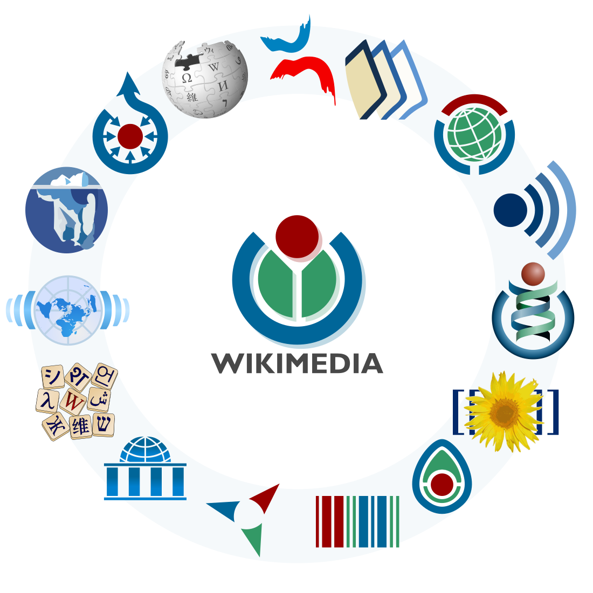
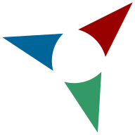
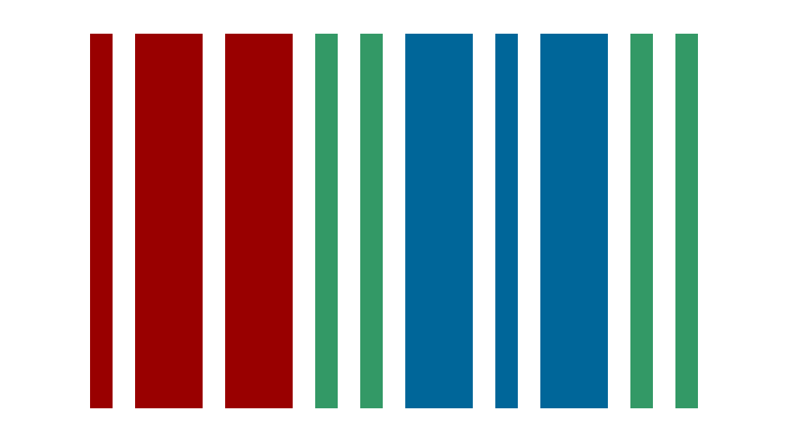
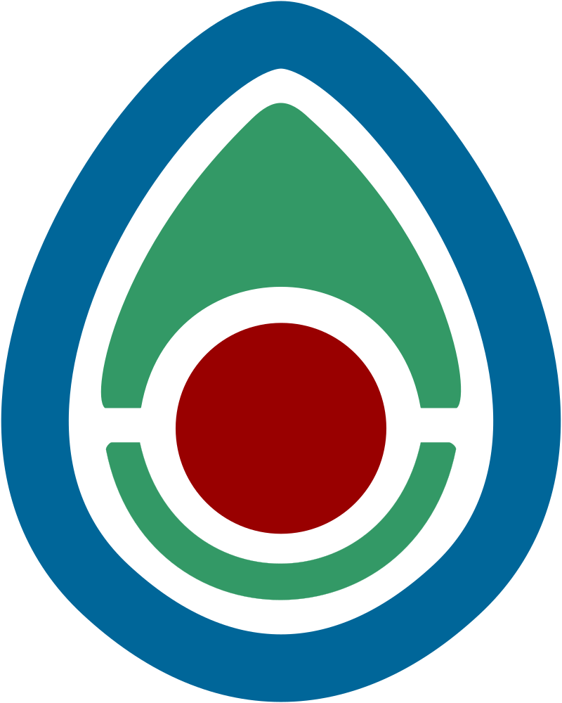

Association pour le libre partage de la connaissance
Wikimedia France
Association française Loi 1901 aidant les contributeurs bénévoles dans le developpement des articles ou dans la promotion des projets de la Wikimedia Foundation.
Wikimedia Foundation
Organisation qui héberge et promeux le développement des projets en ligne comme la Wikipédia, le Wiktionnaire, Wikimédia Commons etc ... développés grâce au logiciel MediaWiki.
Les projets de la Wikimedia Foundation
Wikipédia
|  |  |  |